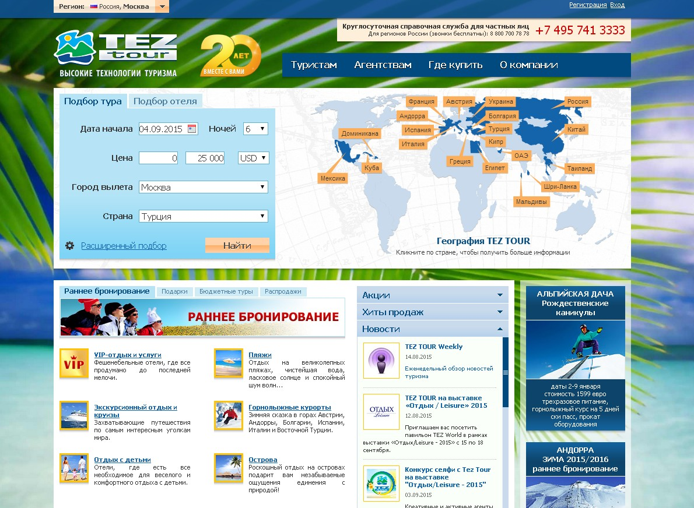
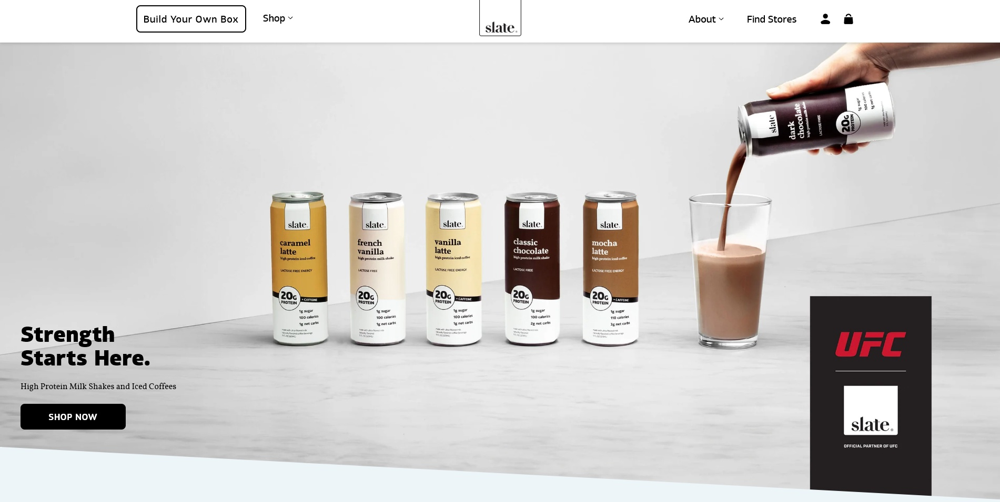

Не заставляйте меня думать.
Не заставляйте меня думать.
Сравнение подходов к юзабилити
Пользователь на обдумывание следующих ситуаций не должен тратить своё время:
Где я?
Откуда следует начинать?
Где они поместили …?
Что является самым важным на этой странице?
Почему они назвали это так?
Реклама или часть сайта.
Нельзя сделать самоочевидным всё. Но добиться самоочевидности страницы или главного экрана — это возможно.

Плохой пример юзабилити. (Нажмите чтобы посмотреть)

Хороший пример юзабилити. (Нажмите чтобы посмотреть)